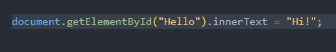

Javascript is a computer programming language commonly used to create interactive effects within web browsers. It is used to make things "work" on a web page.
Lets say you're building a house, you have:
Control Flow is like following a step by step recipe when baking cookies, you can also add conditions to change which steps of the recipe to follow. The 'if' and 'else' statements in the code are the conditions added to determine whether more milk or flour should be added
Lets say you want to bake 10 cookies, meaning you need 10 scoops of dough. Writing out the function ScoopDough() 10 times is impractical. This is where loops come in. This way the ScoopDough can be executed multiple times with just a couple lines of code.
The DOM (Document Object Model) is JavaScript's way of seeing and interacting with your web page. Imagine your website is a big tree. The DOM is like the map of that tree — where each part is a branch you can grab and play with. JavaScript can “talk” to the DOM and make changes. This grabs the element with the id "Hello", and changes its text to "Hi!"

Arrays and objects are similar, but differnt in their own way. Lets say you have a backpack.
Arrays are things you put in the backpack in a specific order. Like a list, you pull things out by their position.
Obects are like the labeled compartments, they are useful when you want to know 'what' something is not just 'where' something is.
Functions are like recipes. They tell the computer how to do something, step-by-step, and you can re-use them anytime you want without rewriting the whole thing.
Lets say you want to introduce yourself:
Functions save you time, help you stay organized, and keep your code clean and easy to understand.